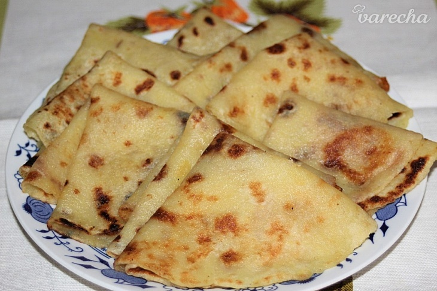

Lokse

Description
Niet nad domáce zemiakové lokše, každý ich u nás doslova miluje. Takto ich pripravujeme už celé generácie.
Ingredients
- 1 kg (uvarené v šupke)zemiaky
- 300 g múka hladká
- 1 KL soľ
- (alebo husacia masť, rastlinný olej) masť kačacia na potieranie
Steps
-
Menšie zemiaky umyjeme a deň dopredu uvaríme v šupke do mäkka.
Necháme vychladnúť najlepšie od večera do rána.
- Uvarené zemiaky zbavíme šupky a postrúhame na jemno. V nádobe zmiesime spolu s preosiatou múkou a soľou na
hladké cesto. Nemiesime príliš dlho, nakoľko by sa cesto mohlo začať lepiť. Z cesta vytvoríme valček dlhý cca 45
cm a pokrájame
na 2,5 cm hrubé kúsky. Zo všetkých kúskov vytvoríme guľôčky, ktoré rozvaľkáme na pomúčenej doske, aby sa cesto
nelepilo,
na hrúbku 2-3 mm do kruhu, podľa veľkosti panvice, 22-24 cm.
- Pečieme z každej strany na suchej rozohriatej teflonovej alebo kameninovej panvici. Ide to veľmi rýchlo.
Priebežne
utierame zvyšnú múku papierovou utierkou. Každú lokšu potrieme kačacou masťou, stačí z jednej strany, lokše
kladieme na
seba, takže suchá strana sa premastí od spodnej. Na mastenie sa môže použiť tiež rastlinný olej, či husacia masť.
Po
upečení ich prikryjem prevrátenou misou, aby vydržali dlhšie teplé.
- Lokše sú výborné ako príloha k pečenej kačici, husi, k mliečnej fazuľovej či inej polievke. Tiež sú vynikajúce
aj ako
sladká varianta, lokše potreté tenkou vrstvou lekváru, posypané makom a cukrom. Je to výborná pochúťka! Dobrú
chuť!